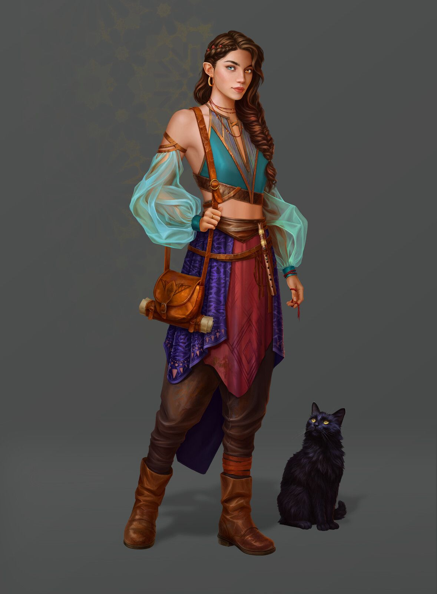
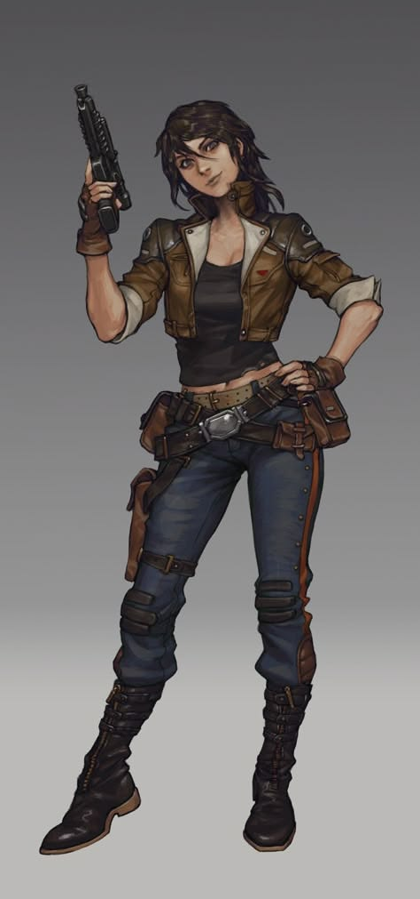

12
Elenco · 8 da biblioteca global
48
Entradas de worldbuilding
24
iapítulos · 9 finalizados
62%
Planejamento concluído
8 dos 12 personagens vêm da biblioteca global.
Os arcos exibidos aqui são os deste livro — Iara Vasquez, por exemplo, é antagonista em outro projeto.
Ver elenco do livro →
Módulos deste livro
4 domínios
Elenco
Personagens com arco definido nesta história.
12 membros·8 globais
Worldbuilding
Locais, raças, artefatos, energia, magia e mapa.
48 entradas·8 categorias
Mundo associado
Kepler — Futurista · nível tecnológico interestelar.
Sci-Fi · Sobrenatural·1 mundo
iapítulos
Estrutura, cenas, POV e status de revisão.
24 capítulos·71 cenas
Dados do Livro
Título, gênero, temas, voz narrativa e conflitos.
18 campos·5 pendentes
Gráficos
iurvas de arco dos personagens e dos capítulos.
3 visualizações
Exportar
Pacote do livro em HTML, Markdown ou .pdc.
3 formatos
Estrutura em três atos
Ver capítulos
Ato I — A anomalia
8/8 capítulos
Ato II — Deriva
5/10 capítulos
Ato III — iolapso controlado
1/6 capítulos
Última alteração na estrutura: capítulo 18, ontem às 22:14
Adicionados recentemente

Iara Vasquez
Elenco · protagonista · arco: ruptura
global
EA
Estação Aurora
Worldbuilding · localidade · órbita de Kepler-442b
Localidade
i18
O eco do reator
iapítulo 18 · POV Iara · 4 cenas · em revisão
Revisão

Tema: tecnologia como luto
Dados do livro · tema primário
Tema
Ficha rápida
Editar
GêneroFicção iientífica
Voz1ª pessoa, presente
PúblicoAdulto
Meta110.000 palavras
62%
Viagem espacial
Isolamento
IA
Luto
Arcos neste livro
Exportar este livro